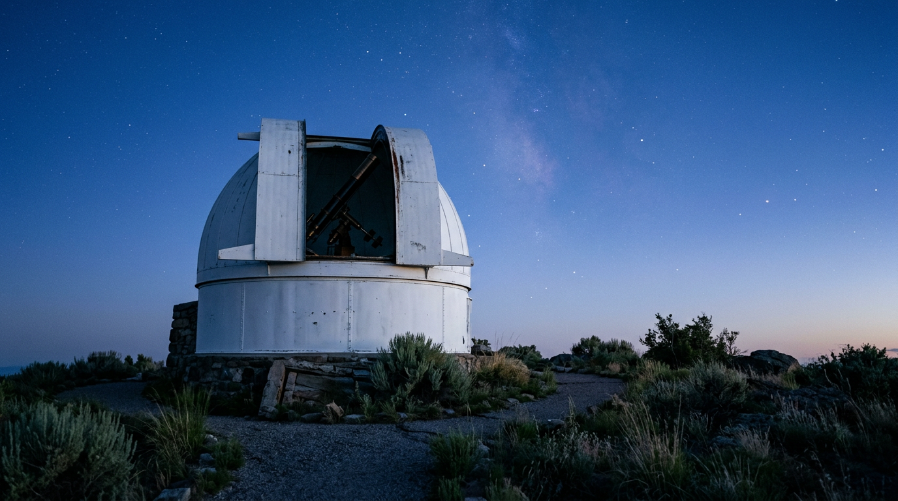

The Vatican Observatory — the Popes' sky.

Four white domes above the Papal Palace, a 1935 Zeiss refractor, a meteorite collection that includes fragments of Mars, a second telescope installed on an Arizona mountain 3,191 metres high. The Vatican Observatory is the most visible — and least told — sign of how much the Catholic Church has invested in astronomy over the last four centuries.
The roots: the calendar reform
The origins of the Observatory go back to the second half of the sixteenth century, when Pope Gregory XIII gathered astronomers and mathematicians of the Roman College to prepare the reform of the calendar, promulgated in 1582. The Tower of the Winds in the Vatican, built between 1578 and 1580, served precisely for the preparatory astronomical studies ([Wikipedia — Vatican Observatory](https://en.wikipedia.org/wiki/Vatican_Observatory)). In the following two centuries the papacy promoted three observatories in Rome — Roman College, Capitol, and the first Specola in the Tower of the Winds (1789-1821) — which remained active with varying fortunes.
The official refoundation bears the date 14 March 1891: Pope Leo XIII, with the motu proprio Ut mysticam, reconstitutes the observatory and entrusts its direction to the Barnabite father Francesco Denza, who had been its promoter ([DISF](https://disf.org/specola-vaticana)). The Observatory was born in part as a scientific response to accusations of the Church's hostility toward science: a political gesture as much as an astronomical one.
The move to Castel Gandolfo
For four decades research continued in the Vatican, with the Observatory engaged in the international Carte du Ciel programme — the photographic mapping of the entire night sky ([Vatican Observatory — History](https://www.vaticanobservatory.va/it/storia)). Then came light pollution: the growth of Rome made studying fainter stars impossible. Pius XI decided, in the early 1930s, to move the observatory to the papal summer residence.
The move to Castel Gandolfo was completed in 1935. Two new domes were built on the roof of the Papal Palace, an astrophysical laboratory for spectrochemical analysis was installed, and scientific management was entrusted to the Society of Jesus. Since then the observatory's seat has remained the same: four domes above the Papal Villas, visible from the village square on clear days.
The instruments at Castel Gandolfo
The Observatory keeps four historic telescopes still functioning: a Zeiss refractor with 40 cm aperture from 1935, the twin telescopes of the Zeiss double astrograph, and a 60 cm Cassegrain reflector ([Wikipedia — Specola Vaticana](https://it.wikipedia.org/wiki/Specola_Vaticana)). The sky brightness conditions of the Roman Castles no longer allow frontier scientific observations, but the instruments remain operational for outreach and teaching.
The Barberini Domes complex also hosts the permanent exhibition on the Observatory's history, with period instruments, star maps and the room-by-room account of four centuries of pontifical astronomy ([Vatican News](https://www.vaticannews.va/it/vaticano/news/2023-05/specola-vaticana-tour-virtuale-ville-pontificie.html)). The virtual tour is freely accessible from the official site vaticanobservatory.va.
The meteorite collection
What still makes Castel Gandolfo an active research centre is the meteorite collection, one of the most important in Europe. The laboratories measure the physical properties of the fragments — density, porosity, magnetic susceptibility, thermal capacity, conductivity — data that feed studies on the formation of the solar system and the composition of asteroids. Among the pieces preserved are also meteorites of Martian origin, which reached Earth after being ejected from the surface of Mars by ancient impacts.
“The Vatican Observatory is an expression of the interest in and support for astronomical research consistently guaranteed by the Popes.”Vatican News, 20 July 2025 — on the anniversary of the Moon landing
The second sky: Mount Graham
In 1981 the Vatican Observatory opened in Tucson, Arizona, the Vatican Observatory Research Group (VORG), in partnership with the University of Arizona. That collaboration produced, in 1993, the Vatican Advanced Technology Telescope (VATT): a 1.83-metre Gregorian telescope on Mount Graham, at an elevation of 3,191 metres ([Wikipedia — VATT](https://en.wikipedia.org/wiki/Vatican_Advanced_Technology_Telescope)). It was one of the first large telescopes in the world built with a honeycomb primary mirror, a technology developed by the University of Arizona's Mirror Lab.
In June 2024 the VATT became a fully robotic telescope: astronomers can control it remotely, including from the offices in Castel Gandolfo, without having to travel to the mountaintop ([Vatican Press](https://press.vatican.va/content/dam/salastampa/it/fuori-bollettino/pdf/EN_CS%20Specola%20Vaticana.pdf)). The automated control system has been named Don, in honour of Donald M. Alstadt, one of the principal donors.
The visit: how and when
The Observatory is not open for daily free visits, but is included in the full tour of the Papal Villas with a ticket that can be purchased on the Vatican Museums website. The route covers the Apostolic Palace, the Barberini Garden and the section dedicated to the Observatory in the Barberini Domes. From September, with the end of the papal stay, opening hours return to normal.
On 20 July 2025, the anniversary of the Moon landing, Pope Leo XIV made his first visit to the Observatory: a sign of the continuity of papal attention to the institution, today directed by the Jesuit Father David Brown.